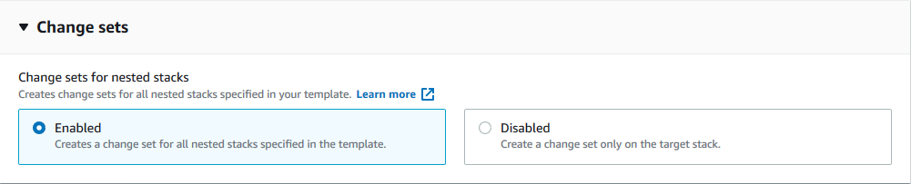

Les traductions sont fournies par des outils de traduction automatique. En cas de conflit entre le contenu d'une traduction et celui de la version originale en anglais, la version anglaise prévaudra.
Modifier les ensembles pour les piles imbriquées
Avec les ensembles de modifications pour les piles imbriquées, vous pouvez prévisualiser les modifications apportées à vos ressources d'application et d'infrastructure sur l'ensemble de la hiérarchie de pile imbriquée et procéder aux mises à jour lorsque vous avez confirmé que toutes les modifications sont celles que vous comptiez faire.
Pour plus de détails sur les ensembles de modifications pour les piles imbriquées, reportez-vous aux sections suivantes :
Présentation des ensembles de modifications et des piles imbriquées
Les ensembles de modifications pour les piles imbriquées combinent les fonctions suivantes ensemble pour étendre la portée de la prévisualisation des modifications à l'ensemble de la hiérarchie de pile :
-
Les ensembles de modifications sont une fonctionnalité CloudFormation qui offre une prévisualisation de l'impact des modifications proposées sur une pile sur les ressources existantes ou nouvellement créées. Lors de la création d'un ensemble de modifications, CloudFormation fournit une liste des modifications proposées en comparant votre pile avec les modifications apportées aux ressources que vous avez soumises. Pour plus d'informations sur les ensembles de modifications, consultez la section Mise à jour des piles à l'aide d’ensembles de modifications.
-
Les piles imbriquées sont des piles qui sont créées dans le cadre d'autres piles. Pour créer une pile imbriquée, spécifiez la ressource AWS::CloudFormation::Stack dans la section
Resourcede votre modèle. Par exemple, vous pouvez disposer de ressources liées à la sécurité ou à la mise en réseau dans une pile imbriquée et de ressources applicatives dans une autre. Le partitionnement des modèles d'application de cette façon aide à entretenir et réutiliser le code. Pour plus d'informations sur les piles imbriquées, consultez la section Travailler avec des piles imbriquées.
Travailler avec des ensembles de modifications pour les piles imbriquées (console)
-
Créer un ensemble de modifications – crée un ensemble de modifications en soumettant des modifications à partir de n'importe quel niveau de la hiérarchie de pile. Vous pouvez soumettre un modèle de pile modifié ou des valeurs de paramètre d'entrée modifiées et CloudFormation compare votre pile imbriquée aux modifications que vous avez soumises pour générer un ensemble de modifications. Les ensembles de modifications pour les piles imbriquées sont activés par défaut dans la console CloudFormation. Pour obtenir plus d’informations, consultez la section Création d’un ensemble de modifications.
Note
L’ensemble de modifications racine est l’ensemble de modifications associé à la pile à partir de laquelle toute la hiérarchie des ensembles de modifications est créée. Vous devez exécuter ou supprimer des ensembles de modifications pour les piles imbriquées de l’ensemble de modifications racine.
-
Afficher l’ensemble de modifications – Visualisez les modifications apportées aux ressources dans les piles imbriquées avant de les exécuter. Vous pouvez afficher les modifications proposées dans la section Modifications de votre ensemble de modifications en naviguant dans la pile active et ses ensembles de modifications imbriqués. Pour obtenir plus d’informations, consultez la section Visualisation d’un ensemble de modifications.
-
Exécuter l’ensemble de modifications – Exécutez les modifications décrites dans l’ensemble de modifications qui concerne la pile active et ses descendants. L'opération d'exécution doit être effectuée à partir de l'ensemble de modifications racine. Pour obtenir plus d'informations, consultez la section Exécution d'un ensemble de modifications.
-
Supprimer l’ensemble de modifications – supprime les ensembles de modifications de la pile active. La suppression d'un ensemble de modifications vous empêche, vous ou un autre utilisateur, d'initier accidentellement un ensemble de modifications qui ne doit pas être appliqué. L'opération de suppression doit être exécutée à partir de l'ensemble de modifications racine. Pour obtenir plus d’informations, consultez la section Suppression d’un ensemble de modifications.
Utilisation des ensembles de modifications pour les piles imbriquées (AWS CLI)
-
create-change-set: les ensembles de modifications pour les piles imbriquées ne sont pas activés par défaut pour la AWS CLI. Pour créer un ensemble de modifications pour l'ensemble de la hiérarchie de pile, spécifiez le paramètre--include-nested-stacks. Pour de plus amples informations, veuillez consulter Pour créer un ensemble de modifications (AWS CLI).
L'exemple AWS CLI suivant concerne une entrée create-change-set.
aws cloudformation create-change-set \ --stack-namemy-root-stack\ --change-set-namemy-root-stack-change-set\ --template-bodyfile://template.yaml\ --capabilities CAPABILITY_IAM \ --include-nested-stacks
L'exemple AWS CLI suivant concerne une sortie create-change-set.
{ "Id":"arn:aws:cloudformation:us-west-2:123456789012:changeSet/my-root-stack-change-set/4eca1a01-e285-xmpl-8026-9a1967bfb4b0", "StackId": "arn:aws:cloudformation:us-west-2:123456789012:Stack/my-root-stack/d0a825a0-e4cd-xmpl-b9fb-061c69e99204" }
-
describe-change-set– Renvoie une liste des modifications que CloudFormation apportera si vous exécutez l’ensemble de modifications. Si l’ensemble de modifications spécifié contient des ensembles de modifications enfant appartenant à des piles imbriquées,ChangeSetIdrenverra des informations sur cet ensemble de modifications. Pour de plus amples informations, veuillez consulter Pour afficher un ensemble de modifications (AWS CLI).
L'exemple AWS CLI suivant concerne une entrée describe-change-set pour l’ensemble de modifications de la pile racine.
aws cloudformation describe-change-set \ --change-set-namemy-root-stack-change-set\ --stack-namemy-root-stack
L'exemple AWS CLI suivant concerne une sortie describe-change-set pour l’ensemble de modifications de la pile racine.
{ "Changes": [ { "Type": "Resource", "ResourceChange": { "Action": "Modify", "LogicalResourceId": "ChildStack", "PhysicalResourceId": "arn:aws:cloudformation:us-west-2:123456789012:stack/my-nested-stack/d0a825a0-e4cd-xmpl-b9fb-061c69e99205", "ResourceType": "AWS::CloudFormation::Stack", "Replacement": "False", "ChangeSetId": "arn:aws:cloudformation:us-west-2:123456789012:changeSet/my-nested-stack-change-set/4eca1a01-e285-xmpl-8026-9a1967bfb4b0", "Scope": [ "Properties" ], "Details": [ { "Target": { "Attribute": "Properties", "RequiresRecreation": "Never" }, "Evaluation": "Dynamic", "ChangeSource": "Automatic" } ] } } ], "ChangeSetName": "my-root-stack-change-set", "ChangeSetId": "arn:aws:cloudformation:us-west-2:123456789012:changeSet/my-root-stack-change-set/4eca1a01-e285-xmpl-8026-9a1967bfb4b0", "StackId": "arn:aws:cloudformation:us-west-2:123456789012:stack/my-root-stack/d0a825a0-e4cd-xmpl-b9fb-061c69e99204", "StackName": "my-root-stack", "IncludeNestedStacks": true, "ParentChangeSetId": null, "RootChangeSetId": null, "Description": null, "Parameters": null, "CreationTime": "2020-11-18T05:20:56.651Z", "ExecutionStatus": "AVAILABLE", "Status": "CREATE_COMPLETE", "StatusReason": null, "NotificationARNs": [ ], "RollbackConfiguration": { }, "Capabilities": [ "CAPABILITY_IAM" ], "Tags": null }
L'exemple AWS CLI suivant concerne une entrée describe-change-set pour l’ensemble de modifications de la pile imbriquée.
aws cloudformation describe-change-set \ --change-set-namemy-nested-stack-change-set\ --stack-namemy-nested-stack
L'exemple AWS CLI suivant concerne une sortie describe-change-set pour l’ensemble de modifications de la pile imbriquée.
{ "Changes": [ { "Type": "Resource", "ResourceChange": { "Action": "Modify", "LogicalResourceId": "function", "PhysicalResourceId": "my-function", "ResourceType": "AWS::Lambda::Function", "Replacement": "False", "ChangeSetId": null, "Scope": [ "Properties" ], "Details": [ { "Target": { "Attribute": "Properties", "Name": "Timeout", "RequiresRecreation": "Never" }, "Evaluation": "Static", "ChangeSource": "DirectModification" } ] } } ], "ChangeSetName": "my-nested-stack-change-set", "ChangeSetId": "arn:aws:cloudformation:us-west-2:123456789012:changeSet/my-nested-stack-change-set/4eca1a01-e285-xmpl-8026-9a1967bfb4b0", "StackId": "arn:aws:cloudformation:us-west-2:123456789012:stack/my-nested-stack/d0a825a0-e4cd-xmpl-b9fb-061c69e99205", "ParentChangeSetId": "arn:aws:cloudformation:us-west-2:123456789012:changeSet/my-root-stack-change-set/4eca1a01-e285-xmpl-8026-9a1967bfb4b0", "RootChangeSetId": "arn:aws:cloudformation:us-west-2:123456789012:changeSet/my-root-stack-change-set/4eca1a01-e285-xmpl-8026-9a1967bfb4b0", "IncludeNestedStacks": true, "StackName": "my-nested-stack", "Description": null, "Parameters": null, "CreationTime": "2020-11-18T05:20:56.651Z", "ExecutionStatus": "UNAVAILABLE", "Status": "CREATE_COMPLETE", "StatusReason": "Executable from root change set", "NotificationARNs": [ ], "RollbackConfiguration": { }, "Capabilities": [ "CAPABILITY_IAM" ], "Tags": null }
-
execute-change-set– Crée ou met à jour une pile à l'aide des informations d'entrée qui ont été fournies lorsque l’ensemble de modifications spécifié a été créé. Pour créer un ensemble de modifications pour l'ensemble de la hiérarchie de pile, vous devez spécifier le paramètre–include-nested-stackspendant le processuscreate-change-set. Pour de plus amples informations, veuillez consulter Pour exécuter un ensemble de modifications (AWS CLI).Note
execute-change-setdoit être exécuté à partir de l’ensemble de modifications racine et appliquera l’ensemble de modifications à l'ensemble de la hiérarchie des piles.
L'exemple AWS CLI suivant concerne une entrée execute-change-set.
aws cloudformation execute-change-set \ --stack-namemy-root-stack\ --change-set-namemy-root-stack-change-set
-
delete-change-set–Supprime l’ensemble de modifications spécifié. La suppression des ensembles de modifications garantit que personne n'utilise un ensemble de modifications inapproprié. La suppression d’ensembles de modifications est asynchrone pour les ensembles de modifications créés avec le paramètre–include-nested-stacks. Pour plus d'informations, consultez Pour supprimer un ensemble de modifications (AWS CLI).Note
delete-change-setdoit être exécuté à partir de l’ensemble de modifications racine et supprimera toute la hiérarchie des ensembles de modifications. Les piles imbriquées dans l'étatREVIEW_IN_PROGRESSseront également supprimées si elles ont été créées pendant l'opérationcreate-change-set.
L'exemple AWS CLI suivant concerne une entrée delete-change-set sur l’ensemble de modifications racine.
aws cloudformation delete-change-set \ --stack-namemy-root-stack\ --change-set-namemy-root-stack-change-set